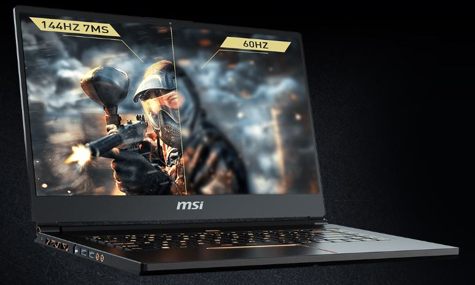
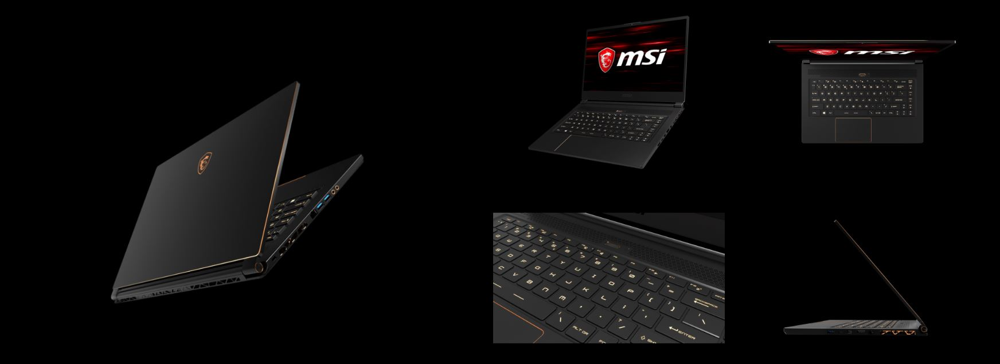
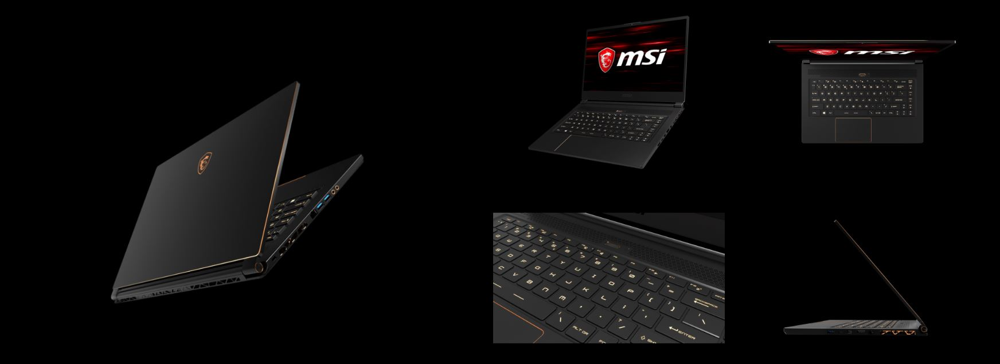

GS65 Stealth Thin: una computadora portátil ultraportátil de 15.6 pulgadas con pantalla de juegos con bisel delgado y su nuevo diseño premium dorado y negro. Afilado, potente, delgado, todo forjado en uno.
GS65 Stealth Thin 8RF
Trinity Boost Booler
Cooler Boost Trinity consta de ventiladores Whirlwind Blade triples mejorados. Las aspas del ventilador de nuevo diseño aumentan efectivamente la presión de aire y el flujo de aire a las mismas RPM. La solución térmica independiente tanto para la CPU como para la GPU con 4 tubos de calor se asegura de ofrecer el mejor rendimiento de juego, incluso bajo cargas extremas.

Dragon Center
El rediseñado Dragon Center 2.0 lleva la optimización a un nivel completamente nuevo. Ahora no solo monitorea sino que también optimiza el rendimiento del sistema a través de varios perfiles personalizables y libera memorias del sistema para priorizar el rendimiento en el juego.

Pantalla
Amplíe la visión para una experiencia de juego extrema. La innovadora Matrix Display de MSI admite hasta 3 +1 pantallas externas simultáneamente (tres externas + integradas). La multitarea es posible incluso durante juegos competitivos. Conecte la computadora portátil a la pantalla HDTV, Matrix Display admite salida 4K con una resolución de hasta 3840 x 2160. La tecnología MSI Matrix Display crea un entorno ideal para una experiencia de juego extrema y un agradable entretenimiento multimedia.
Video
Rendimiento
La exclusiva tecnología "SHIFT" de MSI lleva al sistema al extremo y minimiza el ruido y la temperatura. Cambie entre diferentes perfiles, ya sea empuje su sistema al extremo o busque una mayor duración de la batería. Actívelo fácilmente presionando la combinación de teclas de acceso rápido FN + F7, o a través del Dragon Center.
Procesador
PROCESADORES HEXA-ORDINARIOS PROCESADORES INTEL® CORE ™ i 7 DE 8.A GENERACIÓN ¡Dé un salto enorme en rendimiento con los primeros procesadores portátiles Hexa Core! Experimenta una jugabilidad mejorada y un renderizado más rápido hasta en un 40% con los núcleos adicionales.
Graficos
Con la innovadora solución de enfriamiento Cooler Boost y las características especiales de juego de MSI para los jugadores, la última GPU GeForce® GTX 1070 de NVIDIA podrá lanzar su rendimiento completo por completo en las laptops para juegos MSI.
JUEGO LISTO
GEFORCE ® GTX 10 Series. Esta es la mejor experiencia de juego, impulsada por el rendimiento más rápido, las tecnologías de juego más avanzadas y el mejor ecosistema de juego.
ACTUACIÓN
Las GPU GeForce GTX 10-Series le brindan hasta 3 veces el rendimiento de las GPU de la generación anterior. Están construidos con FinFET ultrarrápido, las últimas tecnologías de memoria de alto ancho de banda, y son compatibles con las características de DirectX 12 para ofrecer las experiencias más rápidas y suaves de los portátiles para juegos.
 
